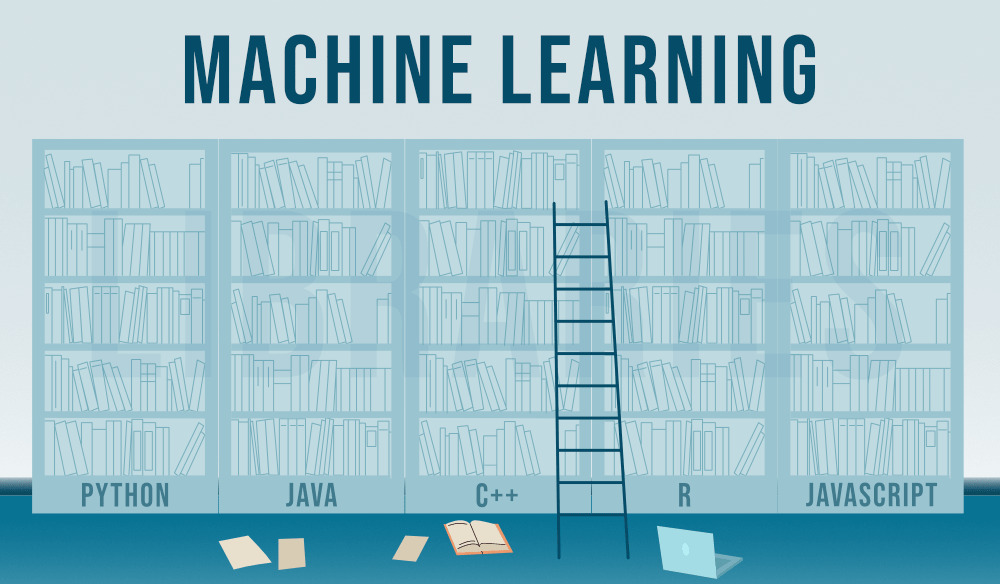

Avances en Machine Learning para 2025
Publicado: 1 de Julio de 2025
Las últimas investigaciones en machine learning están abriendo nuevas posibilidades para la predicción y análisis en tiempo real. Las redes neuronales profundas y los modelos de aprendizaje reforzado destacan en esta revolución tecnológica.
Leer másLas redes neuronales profundas y los modelos de aprendizaje reforzado están revolucionando el sector, permitiendo mejorar la precisión y velocidad de análisis de grandes datos. Se esperan avances significativos en aplicaciones de IA en los próximos años.